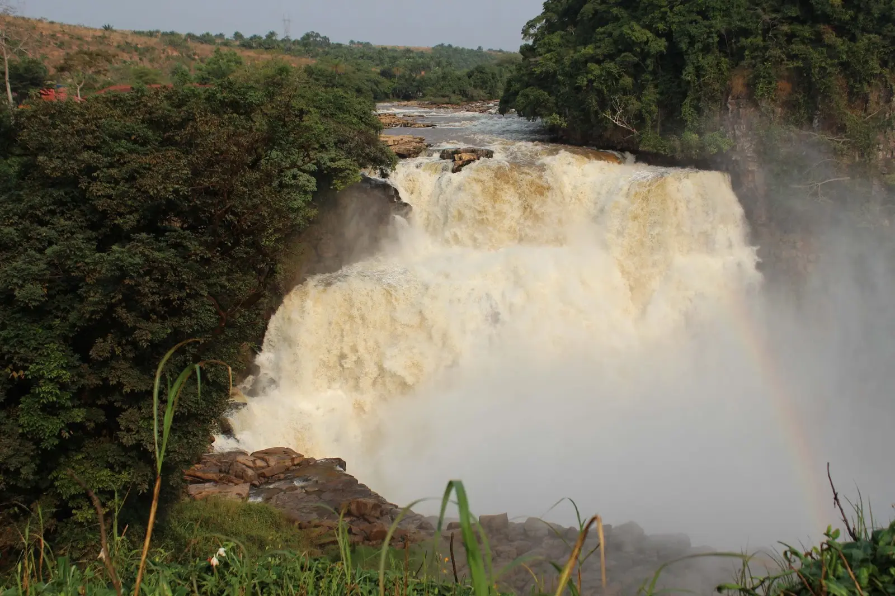
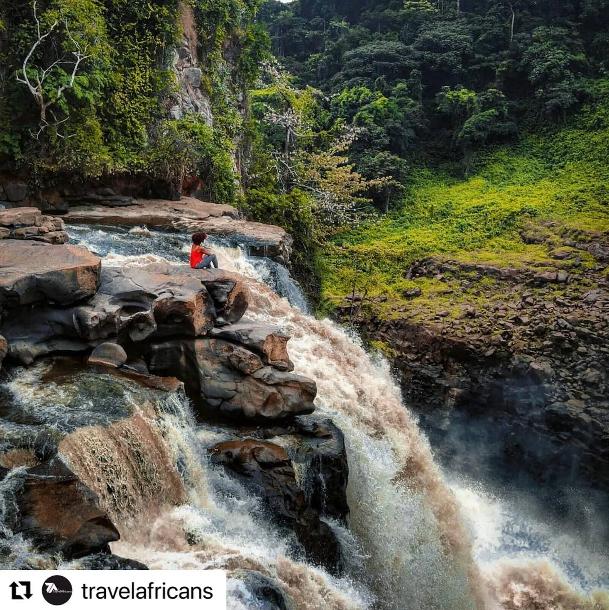
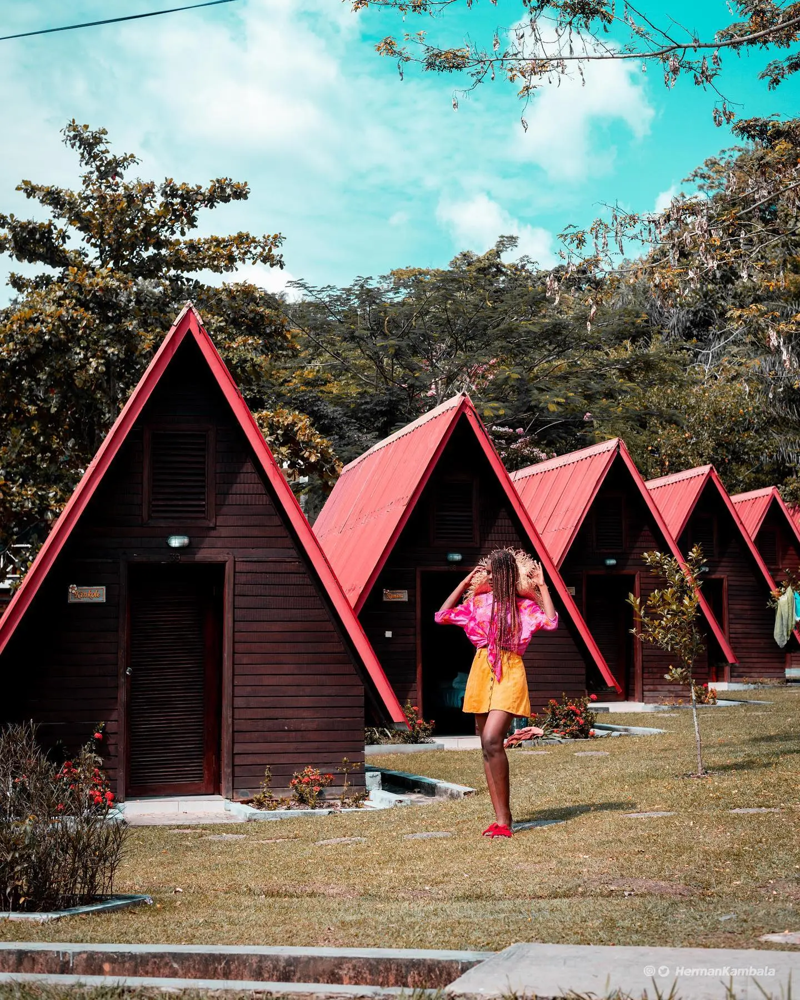

Discover what Zongo has to offer...
Zongo--The Breathtaking natural wonder
Zongo Falls is a breathtaking natural wonder located just outside Kinshasa, the capital city of the Democratic Republic of Congo. Despite the need for a somewhat costly 4WD hire (US$200) to reach this destination, it remains a popular day trip for locals and tourists alike. Standing at an impressive height of 65 meters, Zongo Falls is renowned as one of the most spectacular sights in the country. To reach the viewpoints overlooking the falls, visitors should be prepared for a bit of hiking and should wear appropriate shoes that can handle muddy terrain. However, the effort is well worth it, as witnessing the water cascade over the precipice and into the river below is an unforgettable experience. For those who wish to extend their visit, the Seli Safari Resort is available at the falls. This resort offers the opportunity to enjoy a delicious lunch or even stay overnight, allowing visitors to immerse themselves fully in the beauty of the surroundings. Located approximately 130 kilometers away from Kinshasa, reaching Zongo Falls requires a four-hour journey each way. Despite the distance, the awe-inspiring sight of the falls and the chance to connect with nature make it a must-see destination for anyone visiting Kinshasa and seeking a memorable adventure.

Because it is a powerful place of meditation
At Zongo Falls, magic happens the moment you set eyes on it. Sumptuous and majestic, they flood you with their magnificence while bringing softness and serenity to your soul. Come and get a makeover, recharge your batteries. Meditation is deep there, although the calm is disturbed by the noise emitted by the gigantic showers of water which collide with the rocks, thus producing a spectacular fog. Here, all worries cease, sorrows fly away as if by magic. But the real magic only happens when you contemplate this beautiful waterfall of breathtaking beauty! It's impressive !
There is the Inkisi River to discover
Behind a waterfall hides a river. That of Zongo hides the Inkisi river that you can explore. Originating in Angola, the Inkisi River empties into the Congo River in the Democratic Republic of Congo. It extends over a length of about 555 kilometers. If the spectacle of the Zongo falls is stunning, that of this river does not go unnoticed either, because in its waters you can swim pleasantly. It is from them that the Zongo waterfall draws all its hegemony and charm. So take the opportunity to explore it, you won't be disappointed!

DFS
The CIA World Factbook estimated the population to be over 105 million as of 2022 (the exact number being 108,407,721), now exceeding that of Vietnam (with 98,721,275 inhabitants as of 2020) and ascending the country to the rank of 14th most populous in the world.[2] The proportion of children below the age of 14 in 2020 was 46.38%, 51.15% of the population was between 15 and 65 years of age, while 2.47% was 65 years or older.[2][3]